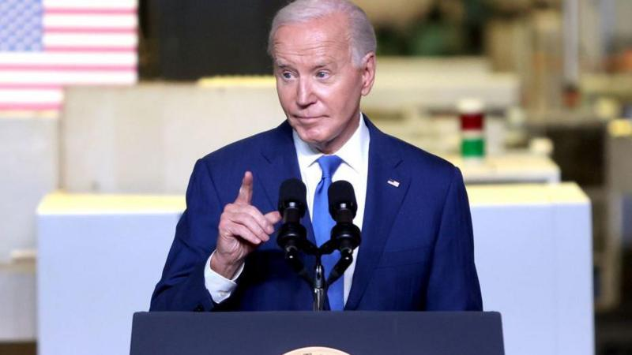
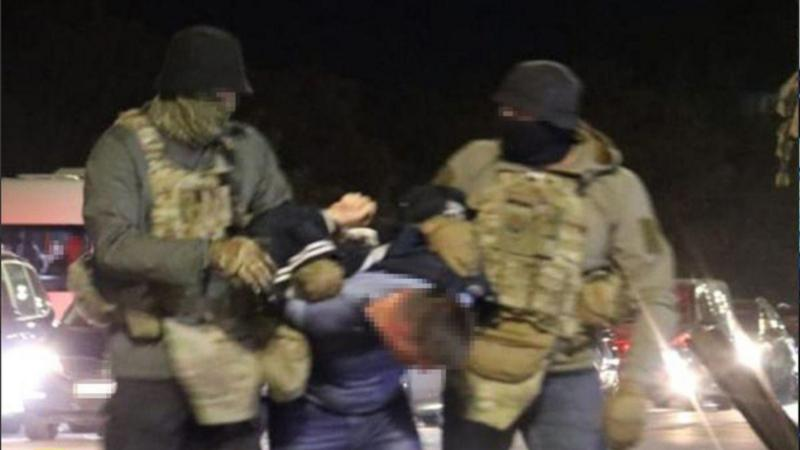

Cómo se partió en dos Rafah, la ciudad en la frontera entre Gaza y Egipto donde se refugian 1,5 millones de palestinos

La campaña militar de Israel contra Hamás tras la ofensiva del grupo militante el 7 de octubre pasado se centra ahora en Rafah, al extremo sur de la Franja de Gaza.
EE.UU. Afirma que detuvo el envío de bombas a Israel y Biden advierte en contra de una gran operación militar en Rafah.

Estados Unidos detuvo un envío de bombas a Israel la semana pasada por temor a que llevara a cabo una gran operación terrestre en Rafah, en el sur de Gaza, dijo un alto funcionario en Washington..
Ucrania frustró un complot ruso para matar al presidente Zelensky, dice el Servicio de Seguridad ucraniano
El Servicio de Seguridad de Ucrania (SBU) informó que frustró un complot ruso para asesinar al presidente Volodymyr Zelensky y otros funcionarios ucranianos de alto rango..